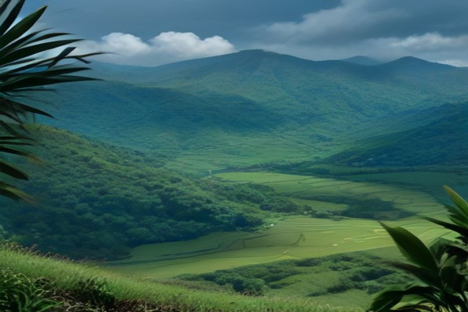
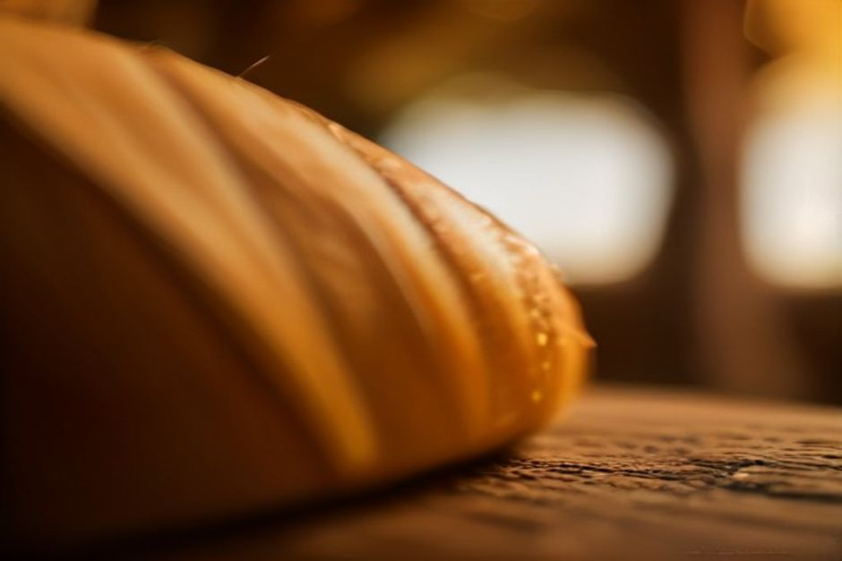

Vous avez vu « aguardente » sur une carte au Portugal et vous vous demandez s'il s'agit d'un rhum, d'un brandy ou d'une simple eau-de-vie ? À Madère, l'aguardente de cana est l'alcool de canne à sucre de l'île, celui qui se cache dans la poncha. Voici ce qu'elle est, ce qui la distingue du rhum que vous connaissez, et où la découvrir.
Aguardente au Portugal : un mot, plusieurs alcools
Au Portugal, « aguardente » désigne d'abord une eau-de-vie, littéralement une « eau ardente ». Le mot est large : selon la région et la matière première, il peut recouvrir des alcools très différents. À Madère, quand on dit aguardente de cana, on parle d'une eau-de-vie de canne à sucre. Ce n'est pas un brandy de raisin.
Sur l'île, elle est produite depuis que la canne y a été plantée, dans les années 1400. Son nom officiel est « Rum da Madeira, Rum Agrícola ». Elle bénéficie d'une Indication Géographique Protégée : elle doit être élaborée dans l'archipel de Madère, à partir de canne cultivée sur place, par fermentation puis distillation du jus de canne frais. Pas de mélasse.
Le résultat est une eau-de-vie claire, forte, à l'attaque nette et végétale. Elle n'a rien à voir avec les rhums de supermarché.
Rhum de Madère ou rhum agricole : à quoi s'attendre
Si vous cherchez « rhum Madère » avant de partir, voici le point à retenir. La plupart des rhums vendus en grande surface sont faits à partir de mélasse, le résidu sombre qui reste quand le sucre a déjà été extrait de la canne. L'aguardente de cana saute cette étape. La canne est pressée, puis le jus est fermenté et distillé le jour même de la coupe, avant que les sucres ne se dégradent.
Vous connaissez le rhum agricole de Martinique ou de Guadeloupe ? Vous êtes en terrain familier : c'est la même famille. Attendez-vous à un goût qui rappelle la plante elle-même : végétal, légèrement poivré, moins sucré qu'un rhum de mélasse du même âge.

Aguardente de cana et poncha : ne pas confondre
C'est la confusion la plus fréquente. La poncha est la boisson, l'aguardente de cana est l'ingrédient. On bat l'eau-de-vie avec du miel et des agrumes, traditionnellement du citron, jusqu'à ce que le mélange mousse. L'alcool s'adoucit, et on obtient la boisson la plus célèbre de Madère.
Bue seule, l'aguardente est une tout autre expérience. Elle ressemble à un rhum agricole blanc, fort et net. On la prend traditionnellement en petit verre, d'un trait, plutôt qu'à siroter.
Comment la boire
La version claire et jeune se boit bien froide, sans rien, en petite quantité. C'est la façon traditionnelle des gens de l'île.
Les versions vieillies, passées quelques années en fût de chêne, se rapprochent d'un bon rhum brun. On les déguste lentement, comme un whisky.
Dans les deux cas, la bouteille arrive rarement seule. Elle accompagne volontiers la poncha, le fromage et la conversation. C'est ainsi que nous la servons à bord : un trait d'aguardente de cana dans une poncha préparée sur place, verre à la main, en route vers Cabo Girão lors d'une sortie à la journée Chifbay.
Où voir fabriquer l'aguardente de cana à Madère
Il ne reste que quelques moulins à sucre en activité sur l'île. Le plus facile à visiter est l'Engenhos do Norte, à Porto da Cruz, sur la côte nord. Le bâtiment date de 1927 et fonctionne toujours avec ses machines d'origine, du chariot de canne à l'alambic. C'est l'un des derniers endroits d'Europe où la canne est encore transformée de façon traditionnelle.
L'entrée est gratuite. Un parcours libre vous mène devant les rouleaux de broyage, les cuves de fermentation et les alambics en cuivre, puis jusqu'à la Casa do Rum, juste à côté, pour une dégustation.
Quand y aller ? Le moulin ne presse la canne que pendant la récolte, environ de février à mai. En dehors de cette période, vous verrez les machines à l'arrêt, mais le lieu et son histoire se visitent toute l'année. Si la fabrication en cours compte pour vous, planifiez votre voyage en conséquence.
William Hinton : le nom que vous verrez sur beaucoup de bouteilles
William Hinton, distillateur anglo-madérien, a fondé sa maison de rhum sur l'île en 1845. Dans les années 1880, elle comptait parmi les grandes exploitations de canne et de rhum de la région. L'ancienne distillerie a fermé en 1986.
Plus tard, un descendant, Jimmy Welsh, a relancé le savoir-faire familial à l'Engenho Novo, à Calheta, sur la côte sud. Ici, le rhum vieillit en fûts de chêne français au lieu d'être vendu jeune et clair. On est parti de 90 barriques en 2009 pour arriver à un chai de bien plus d'un millier. Le nom William Hinton, en rhum agricole blanc comme en version vieillie plus foncée, est aujourd'hui l'un des plus faciles à trouver dans les boutiques de Funchal.
Visiter un moulin ou un chai : deux visites complémentaires
Beaucoup de visiteurs filent directement vers les bars à poncha de Câmara de Lobos sans jamais voir d'où vient l'alcool de leur verre. C'est dommage, car cette visite est l'une des plus oubliées de l'île.
L'Engenho Novo, à Calheta, propose lui aussi des visites et des dégustations, centrées sur les rhums vieillis. On y découvre un tout autre visage du même alcool brut. Voir les deux, le moulin de 1927 au nord et le chai à barriques au sud, donne tout son sens à la poncha que vous avez dans la main.
La poncha prend toute la lumière. L'alcool qui la compose, et qui était le produit d'export de Madère avant même le vin, mérite qu'on le connaisse pour lui-même.
Le goûter en mer avec Chifbay
Pour goûter l'aguardente de cana sans courir d'un endroit à l'autre, vous pouvez la déguster à bord. Chifbay est une entreprise de bateau privé à Funchal : le bateau est pour votre groupe seul, jusqu'à 5 personnes, avec deux skippers agréés de Madère, à bord d'un Karnic R8S de 2026. Le point de rendez-vous est la Marina do Funchal, ponton C.
- Sortie à la journée : départ à 10 h 00 ou 14 h 00. 2 h 30 jusqu'à Ribeira Brava pour 500 €, ou 3 h jusqu'à Ponta do Sol pour 600 €. Câmara de Lobos, Cabo Girão, baignade et paddle à la Fajã dos Padres. Voir la sortie à la journée.
- Coucher de soleil : départ 1 h 15 avant le coucher du soleil, toute l'année. 2 h jusqu'à Cabo Girão pour 400 €, ou 2 h 30 jusqu'à Ribeira Brava pour 500 €. Pas d'arrêt baignade. Voir la sortie coucher de soleil.
Les prix sont pour tout le bateau, jamais par personne. Chaque sortie comprend repas et boissons à bord, une vidéo 360° Insta360, des images de drone si la météo le permet et des photos prises avec un vrai appareil. L'annulation est gratuite jusqu'à 24 heures avant le départ. Pour comparer les options, consultez nos meilleures sorties en bateau à Madère ou les informations pratiques.
Que vous la goûtiez dans un moulin en activité, dans un chai ou sur un bateau, l'aguardente de cana fait partie des rares produits de l'île encore faits à peu près comme il y a 500 ans.
